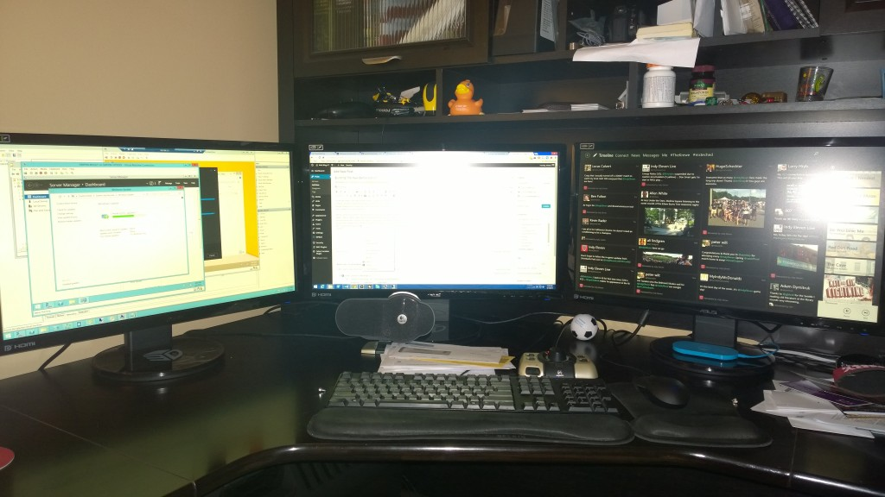

Building The New Battle Station
For the last 5 years, I’ve owned the same desktop computer that I do most of my work from at home. The computer was solid, a Dell XPS 630i. It still was performing like a champ with an occasional blue screen, I believed caused by the SLI video cards. I don’t have much time for video games so I figured there was no point in replacing it for the longest time.
[caption id=”attachment_407” align=”aligncenter” width=”620”] Before monitor replacement[/caption]
Before monitor replacement[/caption]
After two random blue screens in the same evening I decided it was time to bite the bullet and replace the system. I had no interest in spending hours troubleshooting the issues when I knew I wanted a new computer anyway. Now was the time to decide if I was going to purchase a new system or build my own. I did quite a bit of research and I wanted to buy a fairly solid gaming rig that will last me at least another 5 years. Looking at the options out there and comparing the cost associated I decided to build my own machine.
Initially I was just going to build a new tower and not worry about replacing my monitors. I has a very nice setup with 3 monitors (although they were miss-match brands/sizes) the resolution on the 20” screens was very low too. It made it annoying moving windows between screens in most cases. So to begin my search I was not concerned about monitor replacements.
I started the computer component search with a few requirements.
- Intel Chipset
- Nvidia Graphics
- Must Support SLI
- Must support ATLEAST 32 GB of memory
- Must have more than 2 USB 3.0 ports
The requirements were nothing too major, I know for growth moving forward USB 3.0 is a must, and find it annoying that most computers have 1-2 of the USB 3.0 ports and the rest 2.0. The memory requirements of 32 GB may seem extreme, considering most video game rigs use between 8-16GB currently. My thought process is I could off-load some of my VM’s from my Hyper-V lab when it comes to client machines.
So with the requirements outlined I started researching components on a case by case basis.
The Motherboard:
The last motherboard I purchased was an ASRock motherboard for my Hyper-V lab server. I was very happy with the quality of the board, the easy to use BIOS and the overall price point was lower than comparable quality Motherboards. I looked at some of their most recent boards and settled on the ASRock z97 Extreme4. I found the best price on Newegg at the time.
{kind=link}
The Processor:
I started off with the requirement of an Intel chipset, I also knew I wanted an i7 processor. I did a bit of research of the different ones available comparing costs. I normally do not overclock my machine; however I did decide to go with a processor that is overclockable. I settled on the Intel i7 4770k; a week later I read an article that in the next month or so the Intel i7-4790k will be coming out at a similar price point with a 4.0 Ghz clock speed. This was purchased from Newegg also, the price was the same at Amazon; however I received a discount on the video card I purchased by bundling these.
{kind=link}
The Heat sink:
Normally I use the stock heat sink with my processor; however knowing I may be overclocking the system in the future I decided this time to opt for an after market heat sink. My initial search landed me on the Cooler Master V8 GTS, this thing is serious overkill but I didn’t care; I wanted it. However after more in-depth research I found out that I would have to purchase memory without a heat sink to get everything to fit in the case. I continued my search and settled on the Cooler Master Hyper 212 EVO. It had great reviews, and was much cheaper coming in just over $30 from Amazon. The trick that I did run into was when putting everything together, there is a special bracket you have to mount on the back on the motherboard to support the weight of this heat sink. Getting the bracket and heat sink properly installed was quite a time consuming process as the instructions for it were poorly written and poor graphic representations on how to install.
{kind=link}
The Memory:
Memory was probably the easiest, I wanted to find a fairly nice speed memory at a reasonable price. I settled on the Corsair Vengeance (2x8GB) DDR3 1600 Mhz. Now this is where I did go complete overkill on this sytem by tossing 32GB of this stuff in the computer. It’s got a nice look to it and actually arrived at my house on Memorial Day! I had no idea that I would receive any of the past that fast, as I just ordered this stuff over memorial weekend on Saturday! Major cudos to Amazon on shipping speed, and the postal workers who got it to me!
{kind=link}
The GPU:
The GPU is where you can easily spend way more money than necessary, and I had to show serious self-control. I know I am not a major PC gamer as my schedule doesn’t provide me much time; I much prefer Xbox One in my “spare” time anyway. So I wanted something nice, but not overkill. My initial search landed me on the Nvidia GTX 780 Ti; however I quickly was able to say I am not spending over $700 on a single video card. I decided to take it back one and landed on the GTX 770. I was going to start by purchasing two of these and placing them in an SLI configuration. However once I decided to replace my monitors I removed the second one off my shopping list. There is always room to grow once their price goes way down!
{kind=link}
The PSU:
This was tricky as I am not sure how to calculate my needs correctly. However being the Google (Bing?) Ninja that I am I found a nice - very detailed, PSU Calculator. You can use the OuterVision eXtreme Power Supply Calculator Lite to do the same thing!. I probably could have gotten by with a 750 Watt power supply, but after additional research most people recommend bumping that calculation up another 50-100 watt. I selected the Corsair RM Series 850 Watt Power Supply from Amazon as it is module so I didn’t need all the cables in the case that I didn’t need. This kind of bit me in the rear during installation; I normally just plug everything in off the cables dangling; not easy when there are no cables and you have to hunt for where they plugin and where the cable is. Overall I am happy with this PSU to help improve airflow in my case.
{kind=link}
The Case:
This was the real challenge. I wanted to go with a mid-size case and did some searching into the mid-size; but after a quick double check I realized that my GPU was too large and I needed to go with a Full-size. After reading many reviews I landed on the Cooler Master Storm Trooper case, as it provides me plenty of fans, fantastic cable management, and lots of extensiblity if I ever need to throw a ton of hard drives in this thing. This case was easy to work with aside from rotating the fans that are located in the hard drive bays. There were many small screws and very challenging to move around. This case overall is fantastic with fan controls on the top, along with two USB 3.0 ports and a hot swap-able bay for 2.5” drives.
{kind=link}
The Monitor(s):
This was my final decision to make; did I really want to drop the money to replace all of my desk monitors to get them up to 1080p and the same make/model? I’ve got this setup at work and it makes me feel like I’ve got a half-assed build at home by having different resolutions on the screens and slightly different display quality. I did some research into the best quality monitor out there and landed on (3) ASUS VG248QE 24” LED screens. I couldn’t be happier with my decision to replace these.
[caption id=”attachment_414” align=”aligncenter” width=”620”] The new monitor setup[/caption]
{kind=link}
The Final Specs:
PCPartPicker part list: http://pcpartpicker.com/p/xLRtQ7 Price breakdown by merchant: http://pcpartpicker.com/p/xLRtQ7/by_merchant/ Benchmarks: http://pcpartpicker.com/p/xLRtQ7/benchmarks/
- CPU: Intel Core i7-4770K 3.5GHz Quad-Core Processor ($314.99 @ Amazon)
- CPU Cooler: Cooler Master Hyper 212 EVO 82.9 CFM Sleeve Bearing CPU Cooler ($30.99 @ Amazon)
- Motherboard: ASRock Z97 EXTREME4 ATX LGA1150 Motherboard ($143.99 @ Newegg)
- Memory: Corsair Vengeance 16GB (2 x 8GB) DDR3-1600 Memory ($158.12 @ NCIX US)
- Memory: Corsair Vengeance 16GB (2 x 8GB) DDR3-1600 Memory ($158.12 @ NCIX US)
- Video Card: Gigabyte GeForce GTX 770 2GB WINDFORCE Video Card ($334.99 @ SuperBiiz)
- Case: Cooler Master Storm Trooper ATX Full Tower Case ($159.99 @ NCIX US)
- Power Supply: Corsair RM 850W 80+ Gold Certified Fully-Modular ATX Power Supply ($140.98 @ Amazon)
- Monitor: Asus VG248QE 144Hz 24.0” Monitor ($249.23 @ Amazon)
- Monitor: Asus VG248QE 144Hz 24.0” Monitor ($249.23 @ Amazon)
- Monitor: Asus VG248QE 144Hz 24.0” Monitor ($249.23 @ Amazon)
Total: $2189.86 (Generated by PCPartPicker 2014-06-07 20:51 EDT-0400)